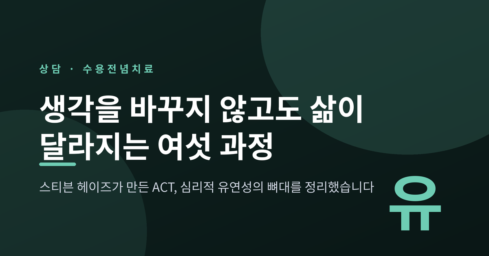
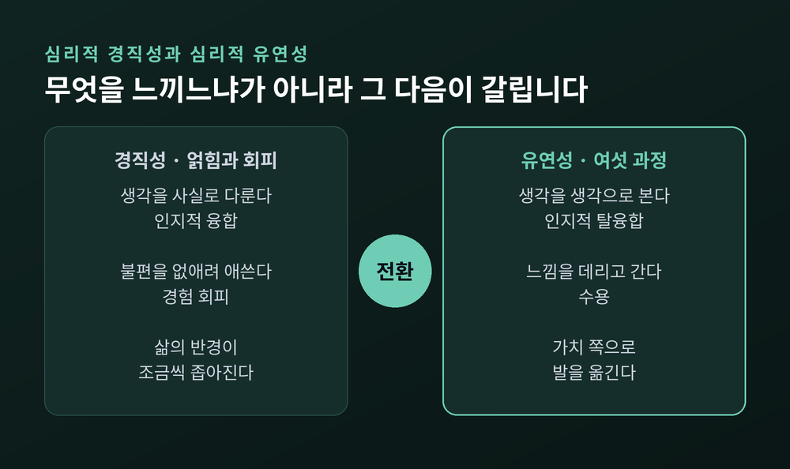
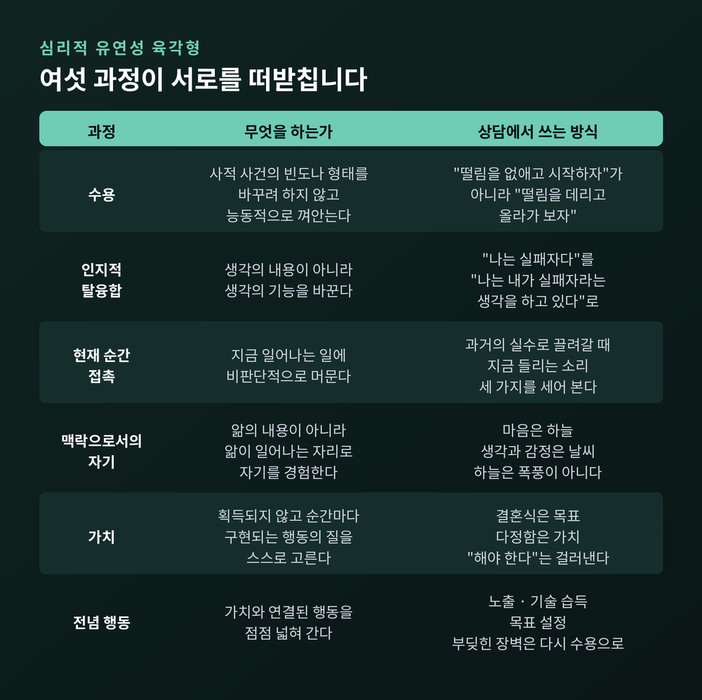
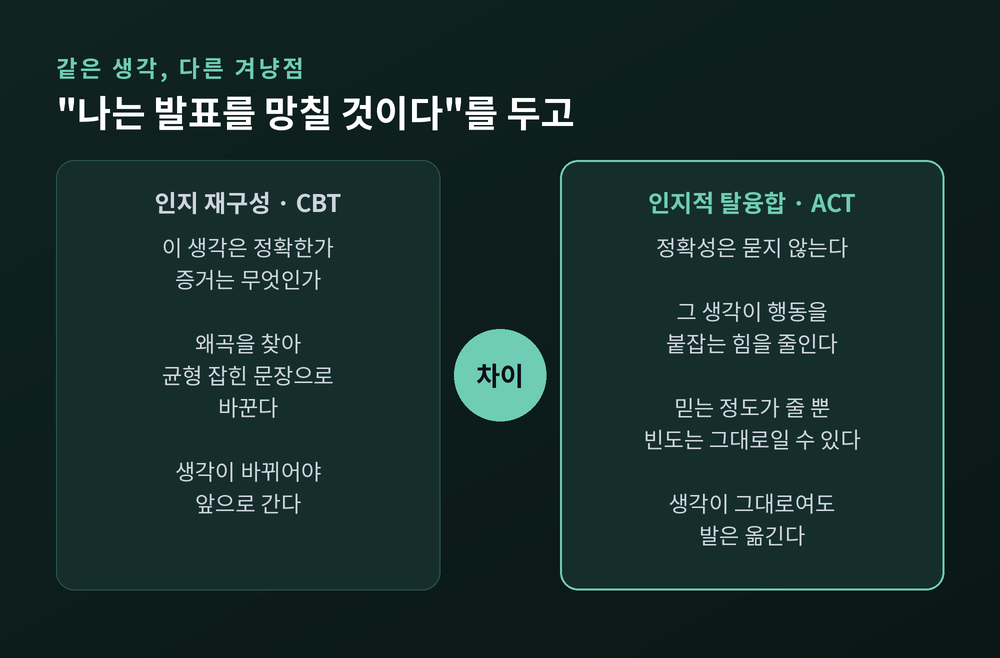
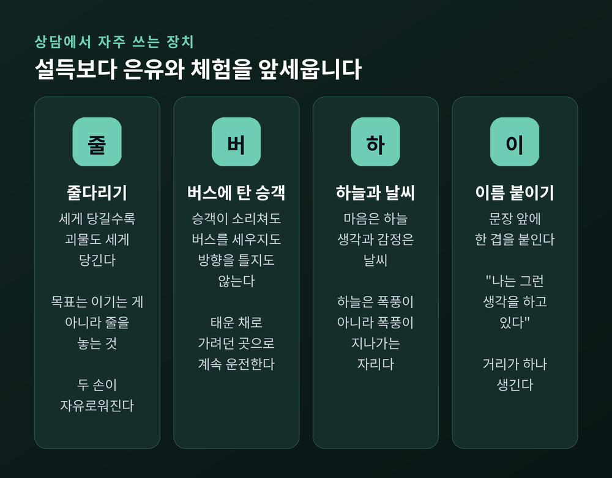
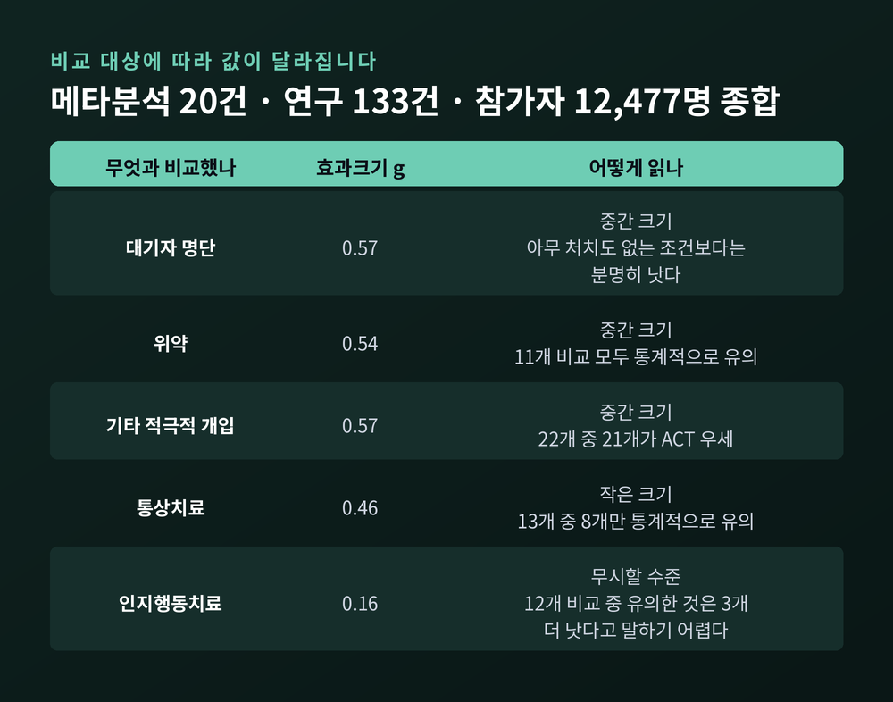
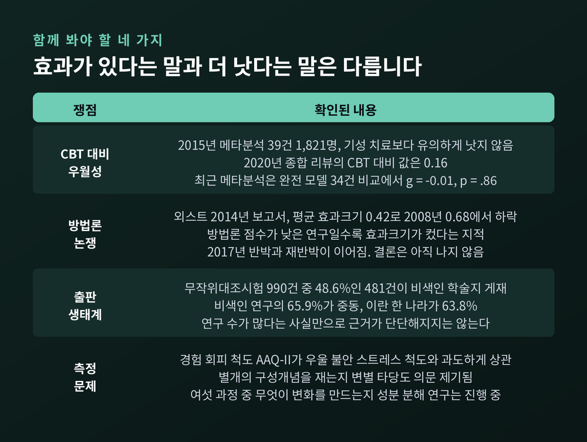

세 줄 요약
이번 글에서는 수용전념치료(ACT)가 무엇을 겨냥하는 치료인지 정리해 보겠습니다. 이름은 길지만 이 치료가 던지는 질문은 하나입니다. 생각이 바뀌지 않아도 삶이 달라질 수 있는가. 여섯 과정의 이름을 외우기보다, 이 한 문장을 붙들고 읽으시면 충분합니다.
수용전념치료는 스티븐 헤이즈와 동료들이 만들었습니다.
시작점은 1970년대 말에서 1980년대 초의 '포괄적 거리두기(Comprehensive Distancing)' 라는 모델입니다. 헤이즈와 로버트 제틀 등이 인지치료와 급진적 행동주의를 배경으로 개발했고, 겨냥한 것은 언어로 만들어진 규칙이 행동을 지배하는 방식이었습니다. 이때 만들어진 탈문자화와 탈융합 연습들은 지금도 이 치료의 뼈대로 남아 있습니다.
1980년대 중반, 헤이즈와 켈리 윌슨, 커크 스트로살이 이를 수용전념치료로 발전시킵니다. 한 시대를 매듭지은 것은 1999년에 나온 첫 단행본이었습니다.
이론적 뿌리는 관계구성틀이론(Relational Frame Theory, RFT) 입니다. 미국심리학회(APA) 사전은 이를 언어와 인지에 관한 학습이론으로 정의합니다.
핵심 개념은 이름이 어렵습니다. '임의적으로 적용 가능한 관계 반응' 입니다. 풀어 쓰면 이렇습니다. 사람은 두 자극을 물리적 성질이 아니라, 사회가 가르쳐 준 임의의 규칙에 따라 연결할 수 있습니다. "A가 B보다 크다"를 배우면 실제 크기를 보지 않고도 관계를 뒤집고 확장합니다.
이 능력은 축복이자 덫입니다. 덕분에 인간은 겪지 않은 미래를 계획합니다. 동시에, 겪지 않은 일로 지금 괴로워합니다.
그래서 이 치료는 조금 다른 가설을 세웠습니다. 문제는 생각의 내용이 아니라, 생각이 행동을 붙잡는 힘이라는 것입니다.
이 치료가 지목하는 두 가지가 있습니다.
첫째는 경험 회피입니다. 연구 문헌의 정의는 이렇습니다. 불쾌한 내적 경험의 형태나 빈도, 상황적 반응성을 바꾸려는 시도가 계속되는 것. 그 결과가 자기 가치와 어긋나는 행동적 손해를 부르는데도 멈추지 않는 것.
여기서 오해를 하나 정리해야 합니다. 회피 자체가 병은 아닙니다. 불편을 피하는 것은 자연스럽습니다. 문제가 되는 것은 회피가 삶의 반경을 좁힐 때입니다.
발표가 두려워 기회를 넘기면 그날은 편합니다. 그런 날이 쌓이면 할 수 있는 일의 목록이 줄어듭니다.
둘째는 인지적 융합입니다. 자기평가와 부정적 생각에 얽혀, 생각을 '생각'이 아니라 '사실'로 다루는 상태입니다.
한 단어 차이로 보이지만, 두 문장 사이에는 거리가 하나 생깁니다. 그 거리가 이 치료가 만들려는 공간입니다.
둘이 합쳐지면 심리적 경직성이 됩니다. 생각에 얽히고, 그 괴로움을 피하려 애쓰다가, 정작 지금 눈앞의 상황과 자기 가치에 맞게 움직이지 못하는 상태입니다.

이 상태를 재는 척도도 있습니다. AAQ-II로 불리는 7문항 질문지입니다. 2011년 타당화 연구는 6개 표본 2,816명을 대상으로 평균 알파계수 .84를 보고했습니다.
다만 여기에는 반론이 붙습니다. 2018년 연구는 AAQ-II 문항들이 우울·불안·스트레스 척도와 지나치게 높게 상관한다는 점을 들어, 이것이 과연 별개의 '경험 회피'를 재는 것인지 의문을 제기했습니다. 이후 개선판인 AAQ-3가 나와 비교 검증이 진행 중입니다.
측정 도구가 흔들리면 이론 검증도 함께 흔들립니다. 이 점은 기억해 둘 만합니다.
이 치료의 태도를 가장 잘 보여주는 장면이 있습니다. 상담에서 널리 쓰이는 '괴물과의 줄다리기' 입니다.
상황은 이렇습니다. 당신과 괴물 사이에 바닥이 보이지 않는 구덩이가 있습니다. 둘은 줄 하나를 사이에 두고 당기는 중입니다. 지면 구덩이로 끌려 들어갑니다. 그래서 온 힘을 다해 당깁니다.
그런데 이상합니다. 세게 당길수록 괴물도 세게 당깁니다. 당신은 조금씩 가장자리로 밀려납니다.
여기서 상담자는 방향을 바꾸는 질문을 던집니다. 어떻게 하면 이길 수 있겠냐고 묻지 않습니다. 이 줄다리기에서 이기는 것이 정말 목표였는지를 묻습니다.
대안은 하나입니다. 줄을 놓는 것입니다.
줄을 놓아도 괴물은 사라지지 않습니다. 여전히 저기 서 있습니다. 달라지는 것은 단 하나입니다. 두 손이 자유로워집니다.
이 연습은 회기 중에 실제로 줄을 잡고 해 보기도 합니다. 문헌은 그 이유를 이렇게 설명합니다. 내담자가 몸으로 지쳐 있을 때 이 은유가 더 강하게 와닿기 때문입니다.
이런 작업을 '창조적 절망' 이라고 부릅니다. 절망이라는 말이 붙었지만 비관의 뜻은 아닙니다. 지금까지 써 온 통제 전략이 통하지 않았음을 함께 확인하는 자리라는 뜻입니다.
맥락적 행동과학회(ACBS)는 이 치료의 목표를 심리적 유연성으로 정의합니다. 의식 있는 인간으로서 현재 순간에 더 온전히 접촉하고, 그것이 가치 있는 목적에 기여할 때 행동을 바꾸거나 지속하는 능력입니다.
이 유연성은 여섯 과정으로 세워집니다. 학회는 여섯 과정을 병리를 피하는 방법이 아니라 길러야 할 긍정적 기술로 규정합니다.

수용은 경험 회피의 대안으로 가르칩니다. 학회의 정의는 정확합니다. 사적 사건의 빈도나 형태를 불필요하게 바꾸려 하지 않고, 능동적이고 자각적으로 껴안는 것. 불안을 다루는 자리에서 상담은 "떨림을 없애고 시작합시다"라고 하지 않습니다. "떨림을 데리고 올라가 보실 수 있겠습니까"를 묻습니다.
여기서 중요한 단서가 붙습니다. 수용은 체념도 참기도 아닙니다. 그리고 그 자체가 목적도 아닙니다. 가치 있는 행동을 늘리기 위한 방법으로서 길러집니다.
인지적 탈융합은 생각의 형태나 빈도가 아니라 기능을 바꿉니다. 기법은 많습니다. 생각을 담담히 지켜보기. 한 단어를 소리만 남을 때까지 반복하기. 생각에 색과 모양과 속도를 붙여 바깥 사건처럼 다루기. "그 생각 알려줘서 고맙다"고 마음에게 인사하기.
가장 단순한 형태는 문장 앞에 한 겹을 붙이는 것입니다. "나는 실패자다"를 "나는 내가 실패자라는 생각을 하고 있다"로 옮깁니다.
성공의 기준도 다릅니다. 학회는 이렇게 씁니다. 탈융합의 결과는 보통 생각이 즉시 줄어드는 것이 아니라, 그 생각을 믿는 정도와 거기 매달리는 정도가 줄어드는 것입니다.
현재 순간과의 접촉은 지금 일어나는 일에 비판단적으로 머무는 연습입니다. 언어를 예측하고 판단하는 도구가 아니라, 관찰하고 기술하는 도구로 쓰게 합니다. 회의 중에 3년 전 실수로 마음이 끌려가면, 지금 이 방에서 들리는 소리 세 가지를 세어 보는 식입니다.
맥락으로서의 자기는 여섯 과정 중 가장 낯설게 들립니다. '나 대 너', '지금 대 그때', '여기 대 저기' 같은 관계 틀 때문에, 언어는 하나의 관점으로서의 '나'를 만들어 냅니다. 이 자기는 앎의 내용이 아니라 앎이 일어나는 맥락입니다.
상담에서 쓰는 은유는 하늘입니다. 마음이 하늘이라면 생각과 감정은 날씨입니다. 하늘은 폭풍이 아니라, 폭풍이 지나가는 자리입니다. 10년 전의 나와 지금의 나 사이에서 내용은 거의 다 바뀌었지만, 그것을 바라본 자리는 같았다는 감각. 그 자리를 회복하면 어떤 경험이 오든 덜 휘둘립니다.
가치의 정의는 인상적입니다. 결코 대상으로 획득될 수 없지만 순간순간 구현될 수 있는, 선택된 목적적 행동의 질. 목표와는 다릅니다. 결혼식은 목표이고 다정함은 가치입니다. 승진은 목표이고 성실함은 가치입니다.
상담자는 동시에 한 가지를 경계합니다. 회피나 사회적 순응이나 융합에서 나온 가치를 걸러내는 일입니다. "나는 X를 가치 있게 여겨야 한다", "좋은 사람이라면 Y를 중히 여길 것이다", "부모님은 내가 Z를 택하길 바란다" — 이런 문장에서 출발한 것은 가치가 아니라 규칙일 가능성이 큽니다.
전념 행동은 가치와 연결된 행동 패턴을 점점 넓혀 가는 과정입니다. 이 대목에서 수용전념치료는 전통적 행동치료와 매우 비슷해집니다. 노출, 기술 습득, 조성, 목표 설정 같은 기법이 그대로 들어옵니다.
그리고 순환이 생깁니다. 행동을 바꾸려 하면 반드시 심리적 장벽에 부딪힙니다. 그 장벽을 다시 수용과 탈융합으로 다룹니다. 여섯 과정이 서로를 떠받치는 구조인 셈입니다.
한 가지 덧붙이면, 이 여섯은 두 묶음으로 나뉩니다. 수용·탈융합·현재 순간 접촉·맥락으로서의 자기는 마음챙김 묶음입니다. 현재 순간 접촉·맥락으로서의 자기·가치·전념 행동은 행동변화 묶음입니다. 두 과정이 양쪽에 겹치는데요. 학회는 그 이유를 이렇게 설명합니다. 의식 있는 인간의 모든 심리 활동은 '지금'을 통과하기 때문입니다.
가장 자주 나오는 질문일 것입니다. 인지행동치료의 인지 재구성과 무엇이 다른가.

같은 생각을 놓고 두 치료가 다르게 움직입니다. "나는 발표를 망칠 것이다"라는 생각을 예로 들겠습니다.
인지 재구성은 정확성을 다룹니다. 인지 왜곡을 찾고, 반대 증거를 모으고, 더 균형 잡힌 문장으로 옮깁니다. "지난 세 번의 발표는 무사히 끝났다"처럼요.
인지적 탈융합은 정확성 질문을 아예 건너뜁니다. 그 생각이 맞는지 따지지 않습니다. 대신 그 생각이 행동을 붙잡는 힘을 줄입니다.
두 치료의 전제가 다르기 때문입니다.
예전에는 괴로움을 줄이려면 먼저 생각을 정리해야 한다고 여겼습니다. 지금 이 치료가 제안하는 순서는 반대에 가깝습니다. 생각을 그대로 둔 채 발을 먼저 옮깁니다.
다만 오해는 피해야 합니다. 이 치료는 인지행동치료의 반대편이 아닙니다. 인지행동치료 계열, 이른바 '제3물결'로 분류됩니다. 노출도 쓰고 행동 활성화도 씁니다. 목적이 다를 뿐입니다. 불안 수치를 낮추려고 노출하는 것이 아니라, 삶의 반경을 넓히려고 노출합니다.
이 치료는 논리적 설득보다 은유와 체험을 좋아합니다. 이유는 이론 안에 있습니다. 언어적 규칙으로 설득하면, 그 규칙이 곧 새로운 융합 대상이 되기 때문입니다.

가장 널리 쓰이는 것이 버스에 탄 승객들입니다. 문헌은 이 은유를 여섯 과정을 한데 모으는 장치로 설명합니다.
당신은 버스 운전사입니다. 뒷좌석 승객들이 소리칩니다. 생각과 기억과 감정입니다. "그쪽으로 가지 마." "너는 못 해." "당장 차 세워." 협박도 합니다.
흔한 대응은 둘입니다. 승객과 싸우려고 버스를 세우거나, 승객이 원하는 대로 핸들을 돌리거나. 전자는 버스가 멈추고, 후자는 가고 싶던 곳에서 멀어집니다.
제3의 길이 이 치료가 가르치는 것입니다. 승객을 태운 채, 소리치도록 놔둔 채, 가려던 방향으로 계속 운전합니다.
대응 관계도 깔끔합니다. 승객은 사적 사건이고, 운전사는 관점으로서의 자기이며, 목적지는 가치이고, 운전은 전념 행동입니다.
숫자로 확인할 수 있는 부분을 정리하겠습니다.
연구 규모부터 보면 규모가 큽니다. 2024년 발표된 분석에 따르면 1986년부터 2022년까지 990건의 무작위대조시험이 나왔습니다. 그중 93.7%(928건)가 2012년 이후, 64.2%(636건)가 2018년 이후입니다. 최근 10여 년에 집중된 셈입니다.
흥미로운 지점이 있습니다. 가장 관대한 기준으로 세어도 DSM 진단과 관련된 연구는 전체의 35.3% 에 그쳤습니다. 나머지는 신체 건강, 체중, 운동, 직장, 친밀감, 학업 같은 주제였습니다. 진단명이 붙지 않은 삶의 문제로 연구가 확장돼 온 것입니다.
효과크기는 2020년에 나온 종합 리뷰가 가장 널리 인용됩니다. 20개 메타분석, 133개 연구, 참가자 12,477명을 통합했고, 무작위대조시험의 집단 간 비교값만 추출했습니다. 가장 보수적인 추정치라는 뜻입니다.

표적별 평균 효과크기(헤지스 g)는 이랬습니다. 우울 0.33, 불안 0.24, 물질 사용 0.41, 만성 통증 0.44, 범진단적 적용 0.46, 삶의 질 0.48, 심리적 유연성 0.42. 대체로 '작은' 범위입니다.
비교 대상별로 보면 그림이 더 분명해집니다. 대기자 명단과 비교하면 0.57, 위약과 비교하면 0.54, 통상치료와 비교하면 0.46이었습니다.
그리고 인지행동치료와 비교했을 때는 0.16이었습니다. 무시할 수준입니다. 12개 비교 중 통계적으로 유의한 것은 3개뿐이었습니다.
저자들의 결론은 담백합니다. 이 치료는 효과적이다. 다만 효과크기는 비활성 통제군과 비교할 때 컸고, 적극적 치료와 비교할 때 작았다.
영역별 근거 수준은 다릅니다. 미국심리학회 12분과는 만성 통증에 '강한 연구 지지', 우울에는 '보통 수준 지지' 등급을 부여했습니다. 하나로 뭉뚱그리기보다 영역을 나눠 말하는 편이 정확합니다.
개별 영역 수치도 몇 가지 확인됩니다. 집단으로 진행한 프로그램을 다룬 메타분석은 48건의 시험, 참가자 3,292명을 모아 불안에서 g = 0.52, 우울에서 g = 0.47을 보고했습니다. 암 환자의 심리적 고통을 다룬 2023년 메타분석은 16건 시험, 711명을 대상으로 불안 −0.41, 우울 −0.45, 심리적 유연성 −0.81을 보고했습니다.
좋은 소식만 적으면 정확한 글이 되지 않습니다.

첫째, 인지행동치료보다 낫다는 근거는 없습니다. 세 갈래 자료가 같은 방향을 가리킵니다. 2015년 메타분석은 39건 시험, 1,821명을 모아 통제조건 대비 g = 0.57을 얻었지만, 기성 치료보다 유의하게 낫지는 않았습니다. 2020년 종합 리뷰의 인지행동치료 대비 값은 앞서 본 0.16입니다. 그리고 최근 발표된 메타분석은 완전 모델을 검증된 심리치료와 비교한 시험 34건을 모아 g = −0.01, p = .86 을 보고했습니다. 이 논문은 현재의 근거가 이 치료를 다른 확립된 치료보다 우선 권고할 근거가 되지 못한다고 결론지었습니다.
둘째, 방법론 논쟁이 진행 중입니다. 라르스괴란 외스트는 2008년에 이 계열 연구의 방법론적 질이 인지행동치료 연구보다 낮다고 지적했고, 2014년 메타분석에서는 평균 효과크기가 0.42로 2008년의 0.68보다 떨어졌으며 질적 개선은 없었다고 보고했습니다. 가장 뼈아픈 지적은 따로 있습니다. 방법론 점수가 낮은 연구일수록 효과크기가 컸다는 것입니다.
여기에 반박도 나왔습니다. 2017년 연구진은 외스트의 리뷰 자체가 체계적 문헌고찰의 표준 관행에서 벗어났으며 그 결과 결론이 정당화되기 어렵다고 주장했고, 외스트는 다시 재반박문을 냈습니다. 이 학회는 외스트를 학술대회에 여러 차례 초청해 발표하게 했습니다. 승패가 갈린 논쟁이 아니라, 진행 중인 토론으로 읽는 편이 맞습니다.
셋째, 출판 생태계의 편중입니다. 990건 중 48.6%(481건)가 색인되지 않은 학술지에 실렸습니다. 비색인 연구 중 중동이 65.9%, 그중에서도 이란 한 나라가 63.8%를 차지합니다. 연구 수가 많다는 사실만으로 근거가 탄탄하다고 말하기는 어렵습니다.
넷째, 핵심 개념의 측정 문제입니다. 앞에서 본 AAQ-II의 변별 타당도 논란이 여기 걸립니다. 경험 회피를 재는 도구가 우울·불안 척도와 구분되지 않는다면, 이 치료가 정말 주장하는 기제로 작동하는지 검증하기 어려워집니다.
여기에 하나 더 있습니다. 여섯 과정 중 어느 것이 실제 변화를 만드는지를 가려내는 성분 분해 연구는 아직 진행 중입니다. 맥락으로서의 자기를 떼어내 검증하려는 임상시험도 등록돼 있지만, 결론은 나오지 않았습니다.
정리하면 이렇습니다. 이 치료는 효과가 있습니다. 하지만 '더 나은 치료'라기보다 '다른 각도의 치료' 로 보는 편이 근거에 맞습니다.
이 글은 정보를 정리한 것이며, 진단이나 치료를 대신하지 않습니다. 본문에 적은 사례는 모두 일반적인 상황을 가정해 구성한 것입니다.
한 가지는 분명히 말씀드리고 싶습니다. 여기 적은 은유와 연습들은 훈련받은 상담자와 함께 다룰 때 제 몫을 하는 기법입니다. 특히 회피를 다루는 작업은 그 사람이 지금 버틸 수 있는 만큼을 가늠하면서 진행해야 합니다. 혼자 밀어붙이면 오히려 힘들어질 수 있습니다.
불안이나 우울이 일상을 흔들거나, 피해 온 일들 때문에 생활 반경이 계속 좁아지고 있다면, 혼자 감당하려 하기보다 정신건강의학과나 전문 상담기관에서 평가를 받아보시길 권합니다. 어떤 접근이 지금의 나에게 맞는지는 전문가와 함께 정하는 편이 안전합니다.
지금 견디기 어려운 상태에 계시거나 주변에 걱정되는 분이 있다면, 자살예방상담전화 109로 연락하실 수 있습니다. 24시간 운영되며 상담 내용은 비밀이 보장됩니다.
끝으로 한 마디만 더 드리겠습니다.
수용전념치료가 준 전환은 새로운 기법 목록이 아니었습니다. 생각과 싸워 이겨야 앞으로 갈 수 있다는 전제를, 굳이 이기지 않아도 갈 수 있다는 전제로 바꾼 것이었습니다.
"생각을 바꾸지 못해도, 발은 옮길 수 있다."
여섯 과정의 이름은 시간이 지나면 흐릿해질 것입니다. 그래도 이 문장 하나는 남을 만합니다. 시끄러운 승객들을 태운 채로도 운전을 계속할 수 있겠냐고 물으신다면, 연습하면 가능하다고 답하겠습니다.